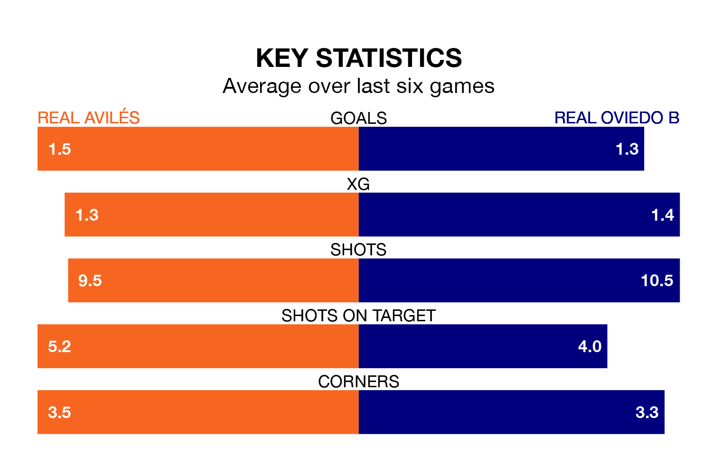

Real Avilés are heavy favourites to keep all three points at home in Sunday's kick-off against Real Oviedo B.
Avilés, who sit eighth in the Segunda División RFEF Group 1 with 26 games played, are priced at 1.6 to seal victory at the Estadio Román Suárez Puerta.
Sitting seven places and five points behind them in the table, Oviedo B are 5.2 to win with *Betting Company*, while the draw is at 3.6.
With 24 goals in 26 games so far this season, Oviedo B are scoring at below the league average rate with 0.9 goals per game. And they are conceding more than average, letting in 31 goals at a rate of 1.2 per game.
Avilés, meanwhile, are above average scorers, with 1.2 goals per game, compared to a league average of 1.1. They have conceded 1.0 goal per game.
In the last three years, Avilés and Oviedo B have played each other on three occasions. They won one each, and they drew once.
Their last meeting was on November 4, when they played out a 1-1 draw.
The hosts are in mixed form in the Segunda División RFEF Group 1, with two wins and three draws from their last six games.
With three wins and two draws over that period, the away side's form is slightly better – they have taken 11 points from 18, compared to Avilés's nine.
Avilés's last match was on March 10, a 2-0 loss against Pontevedra CF.
Oviedo B drew 1-1 with Zamora CF last time out, also on March 10, with Ignacio Estrada Bernaldo de Quirós on the scoresheet.
Updated: 15:10 (UTC), 15/03/24